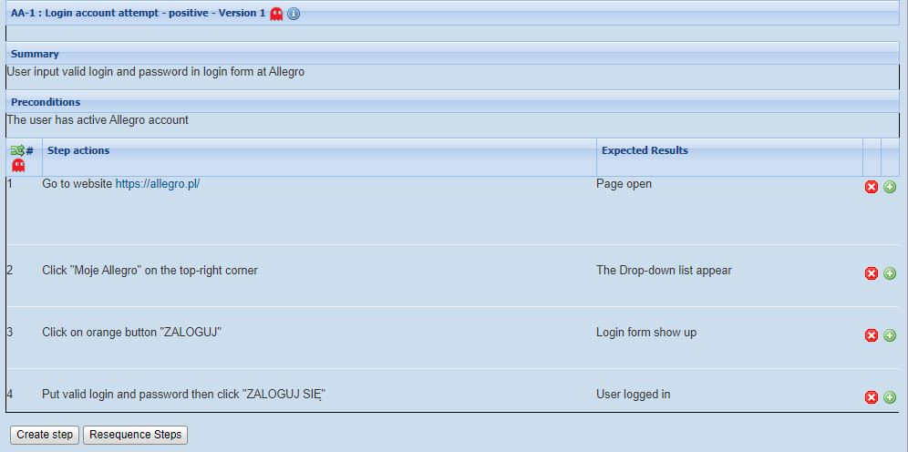
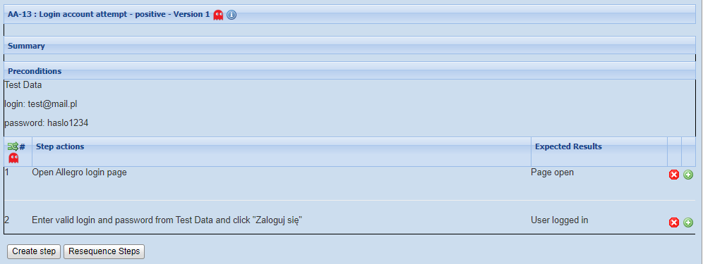

#2 Test cases, test scenarios
Drugi wpis będzie o jednym z podstawowych zadań testera manualnego, czyli pisaniu przypadków testowych.
english version comming soon
Czym jest przypadek testowy?
Przypadek testowy to zbiór danych wejściowych, wstępnych warunków wykonania, oczekiwanych rezultatów i końcowych warunków wykonania opracowany w określonym celu lub dla warunku testowego, jak wykonanie pewnej ścieżki programu lub zweryfikowanie zgodności z konkretnym wymaganiem.
Taką definicje znajdziemy w sylabusie ISTQB.
Inna definicja to:
Przypadek testowy jest to lista czynności do wykonania w celu sprawdzenia prawidłowości działania funkcjonalności.
Przypadki dzielą się na przypadki wysokiego poziomu zwane też przypadkami logicznymi (bez konretnych danych) oraz niskiego poziomu (konkretne dane).
Tworzenie, przypadków testowych w dużej mierze powiązane jest z zdefiniowanymi wymaganiami. Mogą one być zapisane w formie tzw. historyjki użytkownika (User Story), które są pisane z perspektywy końcowego użytkownika.
Przykład:
- Jako [użytkownik] chcę [potrzeba], żeby [cel do osiągniecia]
- Jako użytkownik aplikacji Uber Eats zamawiam jedzenie, bo jestem głodny
Historyjka użytkownika to metoda opisywania wymagań przy tworzeniu oprogramowania w
metodykach zwinnych. Jest napisana prostym, zrozumiałym językiem. Testy oparte o historyjki
użytkownika to np. testy na poziomie systemu albo testowanie akceptacyjne.
Dlaczego piszemy przypadki testowe?
- Pomagają w weryfikacji oczekiwań i wymagań klientów
- Pomagają zweryfikować zgodność z obowiązującymi normami i wytycznymi
- Mogą symulować "prawdziwe" scenariusze dla użytkowników końcowych
- Znajdują błędy i wady
- Przypadki testowe pomagają w lepszej organizacji pracy testera
Poza tym piszemy je , aby udokumentować w przejrzysty sposób rózne możliwości działania modułów w ramach danej aplikacji. Dobre pokrycie przypadkami testowymi oprogramowania daje nam pewność podczas testów, że nie pominęliśmy żadnej ważnej funkcjonalności. Przypadki testowe mogą stać się bardzo dobrym źródłem informacji o niej. Możemy je również wykorzystać w kontekście testów akceptacyjnych w celu potwierdzenia czy aplikacja działa zgodnie z oczekiwaniami.
Jaki powinien by dobrze napisany przypadek testowy?
Dobry przypadek testowy powinien odpowiadać na pytanie "Co tak naprawdę zamierzam przetestować?" Cel każdego przypadku testowego jest inny, ale wszystkie powinny zawierać pewne stałe, kluczowe elementy składowe takie jak: unikalny identyfikator, warunki wstępne, kroki do wykonania testu, oczekiwany i aktualny rezultat.
Elementy przypadku testowego
ID– unikalny numer, identyfikator danego przypadku. W narzędziach takich jak JIRA, TestRail czy TestLink nadawany jest automatycznie. Pomaga w zarządzaniu i przeszukiwaniu bazy przypadków testowychCel– najważniejszy element, opisuje przyczynę tworzenia i przeprowadzania testuAutorTytuł– poeinien być konkretny, zwięzły i przedstawiać w jasny, zrozumiały sposób na czym polega dany przypadek testowy, najlepiej jedno, dobrze sformułowane zdanieŚrodowisko– np. wersja systemu operacyjnego, przeglądarkiOpis– rozwinięcie tytułu, również zwięzłe i na tematWarunki wstępne– (kryteria wejścia) – są to dane potrzebne do wykonania testu. Mogą być to zarówno informacje na temat konta użytkownika, jego uprawnień, jak i miejsca w aplikacji, gdzie znajduje się zalogowany użytkownikDane testowe– dobrze jest zamieszczać dane testowe, gdyż ułatwiają one pracę w regresji, a także podpowiadają jaki format dane testowe powinny mieć (dotyczy przypadków niskiego poziomu)Kroki testowe– instrukacja krok po kroku, co należy wykonaćoczekiwany rezultat– jak się zakończył dany krok, sukcesem czy porażkąWarunek końcowy– warunek, jaki musi zostać spełniony, aby test można było uznać za wykonanyStatus– "zaliczony" lub "niezaliczony". Inne to "nie wykonano" i "zablokowane"Piorytet– istnieje możliwość nadawania priorytetów przypadkom testowym, pozwala to w przypadku braku czasu zdefiniować, które testy zostaną wykonane w pierwszej kolejnościWykonanie– manualne / automatyczneCzas na wykonanie– czas, jaki zgodnie z naszą wiedzą powinien zostać poświęcony na weryfikację przypadku testowegoPowiązania z wymaganiem(pokrycie testowe)Załączniki– zrzuty ekranu, wideo, logi z przeglądarkiKategoria / typInformacje o wersji
Wymieniłem wszystkie elementy, które mogą się znaleźć w przypadku testowym, jednak nie wyszystkie oczywiście są wymagane. Ponieżej podział na niezbędne i pozostałe.
Niezbędne: ID, tytuł, warunki wstępne, rezultat oczekiwany, warunek końcowy
Reszta jest opcjonalna.
A teraz w końcu trochę praktyki! Przykład użycia przypadku testowego w programie open source do zarządzania testami – TestLink
Jak widzimy na załączonym obrazku jest lista przypadków testowych, które weryfikują funkcję logowania w serwisie Allegro. Scenariuszem jest właśnie weryfikacja funkcji logowania przy użyciu danych wysokiego poziomu. Przypadki kolejno to pozytywna próba zalogowania, negatywna, przy użyciu złego loginu, próba zalogowania przez konto Google lub Facebook. Drugi scenariusz to weryfikacja funkcji logowania przy użyciu danych niskiego poziomu. Oczywiście tych przypadków może być więcej!

Tutaj widzimy podgląd pierwszego przypadku testowego #AA-1, który zawiera:
- tytuł:
Login account attempt - positive - krótkie podsumowanie:
User input valid login and password in login form at Allegro - warunki wstępne:
The user has an active Allegro account - kroki:
step actions➡️expected result - dodatkowo są jeszcze pola:
status, importance, estimated exec. (min), platforms, requirements, relations, test plan usage, attached files
W powyższym przykładzie przeprowadziłem pozytywny przypadek testowy udanej próby logowania się do Allegro z użyciem danych wysokiego poziomu. (niekonkretnych)
Spójrzmy jeszcze na taki sam przypadek testowy, ale z konkretnymi danymi. (niskiego poziomu)

Na Guru99 znajdziecie fajny tutorial po angielsku z użycia TestLinka. Z dokładnymi ilustracjami jak krok po kroku przeprowadzać testy.
Scenariusz testowy a przypadek testowy
Najprościej mówiąc, scenariusz jest to zbiór przypadków testowych. Powinien być odzwierciedleniem dokładnie określonej funkcjonalności. (inne nazwy to skrypt testowy, specyfikacja procedury testowej)
Scenariusz testowy = [Przypadek testowy #1, przypadek testowy #2... itd.]
Analogicznie do poprzednich przykładów z TestLink np.
Scenariusz testowy – sprawdź fukcjonalność logowania się
- Przypadek testowy #1 Logowanie – przypadek pozytywny, wprowadzenie
poprawnegologinu i hasła - Przypadek testowy #2 Logowanie – przypadek negatywny, wprowadzenie
niepoprawnegologinu i hasła - Przypadek testowy #3 Logowanie – sprawdź odpowiedź modułu z
pustym polemloginu - Przypadek testowy #4 Logowanie – czy przycisk
Przypomnij hasłodziała poprawnie
itd.
Pokrycie testowe to wskaźnik, który daje nam odpowiedź, w jakim stopniu przetestowaliśmy daną część aplikacji (funkcjonalność).
Cele przypadków testowych
- Wyznaczenie bezpośrednio i pośrednio miary oraz metryki jakości testowanego oprogramowania
- Powinny być wykonywalne
- Powinny być nastawione na znalezienie defektów
- Powinny weryfikować poprawność działania systemu
- Powinny minimalizować koszty wsparcie technicznego
- Powinny dostarczać informacje wspomagające decyzję o wstrzymaniu lub wprowadzeniu systemu na środkowisko produkcyjne
Dobre praktyki pisania przypadków testowych
- Przypadki testowe muszą być jasno sformułowane, jak najprostszym językiem np.
przejdź do strony głównej,wprowadź dane,kliknij w przyciskitd. Dzięki temu zrozumienie kroków będzie łatwe, a wykonanie testu szybsze. - Pisząc przypadki pamiętaj o końcowym użytkowniku!
- Unikaj powtarzania tych samych przypadków
- Nie należy zakładać z góry funkcjonalności i właściwości aplikacji. Należy trzymać się w oparciu o specyfikację wymagań.
- Zapewnij 100% pokrycia testów. Pisząc przypadki testowe upewnij się, aby sprawdzić wszystkie wymagania oprogramowania wymienione w specyfikacji. Użyj
macierzy śledzenia(Traceability Matrix), wówczas żadna funkcja/warunki nie będą pozostawione bez testów.
Skutki używania złych przypadków testowych
Kiepska jakość przypadków testowych skutkuje m.in. niejednoznaczynymi wynikami wykonania, frustracją testerów i zwiększa ryzyko tzw. rezlutatów fałszywie-pozytywnych (false-positive) i fałszywie-negatywnych. Dlatego warto inowestować czas w naukę dobrego projektowania przypadków testowych, ich przeglądy i późniejsze pielęgnowanie, co zwraca się z nawiazką skróceniem czasu testów regresji i skutecznością wykrywania defektów.
Mało było cytatów w tym wpisie, więc nadrabiam. 😀
„Udany przypadek testowy to taki, który odkrywa dotąd nieznany błąd”
Na koniec warto jeszcze wspomnieć, ze przypadki testowe różnią się w zależności od organizacji, poziomu testów i metod wytwarzania oprogramowania. Mogą być użyte w automatyzacji, bo mając już opisane scenariusze z przypadkami można je później oskryptować. Mogą też słyszyć do dokumentacji testowej.
Podsumowanie
Projektowanie przypadków testowych jest usystematyzowaniem pracy testera. Przypadki pomagają nam w procesie sprawdzania poprawności oprogramowania, ponieważ porządkują pracę i dokładnie wiemy, ile nam jeszcze zostało do przetestowania. Sprawdzając jakiś moduł, łatwo jest wpaść w "wir testowania" skupiając się na jednym małym wycinku, tracąc z oczu ważniejsze funkcjonalności, które nie zostały jeszcze sprawdzone.
Projektując przypadki testowe pamiętajmy, że nie jesteśmy w stanie pokryć danej funkcjonalności w 100%, gdyż nawet najlepszy tester nie jest w stanie przewidzieć wszystkiego. Nie jest możliwe też znalezienie wszystkich błędów w systemie, ale należy dążyć do tego, aby wszystkie błędy, szczególnie te krytyczne zostały wykryte.
Literatura: 📚
Bardzo dużo inspiracji garściami czerpałem z blogu [bulldogjob.pl], a dokładniej z artykułu Karoliny Kowalskiej, z blogu Michała Putowskiego [jakzostactesterem.pl], z blogu Waldemara Szafrańca [wyszkolewas.com.pl], również z [cherry-it.pl], ze wspomnianej wcześniej strony [guru99.com] i standardowo z materiałów ISTQB.
Zachęcam do zajrzenia w tamte miejsca!